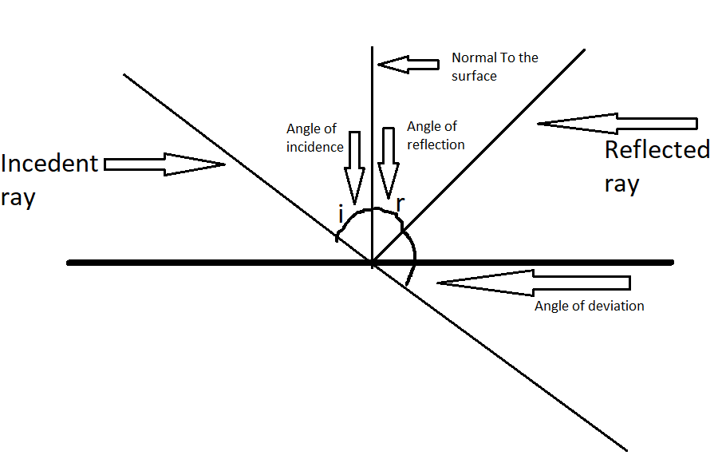
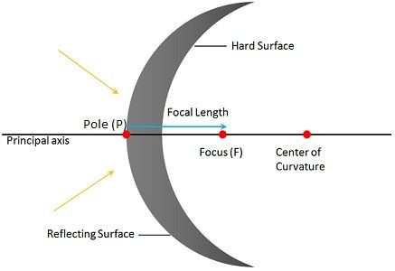
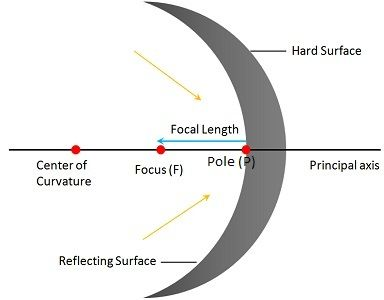

INTRODUCTION TO SOUND
When we listen to the beautiful sounds of stereo, we are actually listening to the rythyms of trillions of electrons obeying us. Sound is important. We use sound for verbal communication. The words which we speak and the song being played in the rythym box produce sound which we are able to hear. Do you know what is Acoustics ? Acoustics is the study of sound. It is branch of physics that deals with the study of mechanical waves in gases, liquids and solids. Like eyes detect light and color, our ears help in the hearing of sound.
Types of Sounds:
There are variety of sounds ranging from faint sounds to loud sounds. -
Infrasonic: Sounds with a frequency below 20Hz. EThese sounds are used to detect petrol formation under the Earth and Possibility of Earthquakes.
Audible: Sound range which human ear can detect. The audible range is 20 Hz, to 20,000 Hz &
Ultra sonic: Sounds with a frquency above 20,000 Hz. Used in measuring distances and in detecting objects.
How sound travels?
Sound is a vibration. It is created by vibrating objects and is then propagated through a medium from one location to another. This is known as "Propogation Of SOUND".
It can travel through any medium(Gases, liquids and solids)but not in vacuum. Which is why there is no sound in space.
Characteristics of sound:
Unlike Light, Sound needs a medium to travel. Sound waves are longitudinal/mechanical waves as the motion of the air particles is in direction that is parallel to the direction of energy transport. Because of this motion, there are regions in the air where the air particles are compressed together forming high air pressure known as Compressions and the regions where the air particles are spread apart forming low air pressure known as rarefactions. Due to this repeating pattern of high and low air pressures moving through a medium, sound is also referred as a pressure wave.
Key concepts in Sound:
WORD MEANING Frequency Frequency is the number of vibrations per unit of time, represented in Hertz (Hz). 1 Hz = 1 Vibration / Second. Pitch The sensation of a frequency is commonly reffered to as the pitch of the sound. A high frequency sound is called a high pitch while a low frequency is called low pitch. Time Period The time period from one frequency to the other or from compression to a rarefaction is called a period. 𝒯 = 𝟣/𝓃, where 𝓃 is the frequency Crest A crest point on a wave is the maximum value of upward displacement within a cycle. Trough A trough point on a wave is the maximum value of downward displacement within a cycle. Amplitude The maximum displacement from the mean position to any trough or crest is known as Amplitude. Loudness The intensity of sound is called the loudness of sound, measurred in decibles(dB). Loudness of soudn is determined by the Amplitude. High the amplitude, higher the loudness and vice versa.
DOPPLER EFFECT:
The Doppler effect is the change in frequency of a wave in relation to an observer who is moving relative to the wave source. It is caused because the distance between the source of sound and the observer is changing. If the source and observer is approaching, the distance is decreasing and if they are moving apart, the distance increases.
The source always emmits same frequency .Therefore, for same period of time, if the distance is large, the wave spread apart forming low pitch. Where as if the disatance shortens, the wave compresses forming high pitch.
A common example is the high pitch of horn observed when the train approaches and low pitch when the train passes away.
RESONANCE
When one object vibrating at it's natural frquency forces a second object into vibrational motion is called as resonance. This happens only when the natural frequency of the first object is same as the natural frequency of the second object. Example- The sound of sea heard when a sea shell is placed near the ear is due to the resonance.
Echo
Echo is the reflection of sound that arrives at the listener with a delay after the direct sound.The delay is directly propotional to the distance of the reflecting surface from the source and the listener. Example : An empty house with no furniture. The Walls reflect the sound back to the ears. Study says that the Human brain stores a sound for 0.1 seconds. Hence, an echo is heard ONLY if the reflected sound arrives later than 0.1 seconds from the original sound.
LIGHT
Introduction to light?
Eyes are the most valuable organs in the human body as it helps us to see everything around us. Is it possible to see in the darkness?
we are able to see objects around us because of the light falling on those objects and reflecting into our eyes. Light can be understood as a form of energy that produces sensation of vision.
We see things around us instantly due to the tremendous speed of light. Light travels at an incredible speed of 3,00,000 KmPH !!! It amazes to know that light travels 8 times around the Earthin1 second.
Luminous and non Luminous objects.
Some objects generate light on their own such as the sun, torch, tube light etc.These are called Luminous objects.
Objects that cannot generate on their own but can reflect light such as moon are non luminous or illuminated objects.
Dual nature of light
Light has a dual nature where in it is both a particle and a wave.
Light is a wave and also a flow of extremely small particles called PHOTONS, which are packets of electromagnetic energy that make up light.
Rectiliniear Propogation of light
Why do we represent light wave in a straight line? Why not a curved line? It's due to the "Rectilinear Propogation of light", Which states that light always trabels in a straight line.
Experiment to prove light travels in straight line: Take 3 cardboard pieces and 1 candle. Drill a hole in the center of the 3 cardboard pieces and place them on the ground with equal distance from each other. Then place a candle at one end. When you see through the holes in the cardboard, you can see the candle but when you move any of the cardboard , you cant see the candle. This proves that Light travels in straight line.
LIGHT VS OBJECTS:
Based on amount of reflection of light
Some objects donot allow light to pass through them,reflects light completely and casts shadows. These are known as Opaque objects objects.
Objects that allow light to pass through them partially, reflects small portion of light and casts mild shadows are known as Translucent objects. Objects that allow light to pass through them completely, reflects completely and donot cast any shadow are known as Transparent objectsBased on Interaction with light
Light behaves in many different ways when it interacts with different objects.
Certain objects abosrb light completely, transforms them into heat energy and donot reflect light at all. This property is known as "Absorption" of Light. Transparent objects donot absorb any light. They "reflect" portion of the light and "transmits the rest through the other end of the object. Objects with rough or irregular surfaces "scatters" the light into all directions.
Reflecting and Refraction
When a light ray bounces off a smooth polished surface, It is called as reflection. Reflection is also bouncing of light. When a light eay touches the surface of another medium, it bends. This is known as refraction. Bending of light from one medium to another is known as refraction.
Rules of Reflection
A lightray which is incident on a mirror is known as incident ray.
A light ray which is reflected off the mirror is known as reflected ray.
An imaginary line that is drawn perpendicular to
the surface is known as normal line.
The angle between the incident and the normal is the angle of incidence , represented by 'i'.
The angle between the reflected ray and the normal is known as the angle of reflection,
represented by 'r'.The Laws of reflection are-
1- The Angle of Incidence is equal to the Angle of Reflection.
2- The Angle of reflection, incidence, the normal, the incident ray and the reflected ray lie on the same plane.
Multiple Reflections
When 2 plane mirror are placed opposite to each other, infinite number of images are formed. However, if they are placed at an angle, the number of images formed are driven by 𝓃 = (𝟥𝟨𝟢 / θ) -1 where 𝓃 = the number of images and theta (θ) is the angle between the 2 mirrors.
Refraction
Refraction is the bending of path of the light wave as it passes across the boundary seperating 2 media. Refraction is cause by the change in speed experienced by a wave when it changes medium. Formation of rainbows , sparkle of diamonds, formation of mirages are phenomena of refraction.
Rules of refraction
If a light wave passes from a medium in which it travels slow, into a medium in which it travels fast, then the light wave would refract away from the normal.
If a light wave passes from a medium in which it travels fast into a medium in which it travels slow, then the light wave will refract towards the normal.

Mirrors and Lenses
Mirrors is defined as a shiny glass with a silvery coating at it's back which reflects light.
There are 2 types of mirrors:
Plane mirrors: A mirror with a flat surface is called a plane mirror which produces virtual and erect images.
Spherical mirrors: A mirror with a curved surface is called a spherical mirror which forms diminished or magnified images.
CONCAVE AND CONVEX MIRRORS
Convex Mirror: A mirror in which the reflection takes place from the curved surface is a Convex mirror. It is a Diverging mirror
Concave Mirror: A mirror in which the reflecting surface is curved inwards is a Concave mirror. It is a Converging mirror.
Terms used in Spherical Mirrors:
 
Term Meaning Center Of Curvature (C) Center of the reflecting surface of a sphere of which the mirror forms a part. Radius Of Curfvature (R) Radius of the sphere of which mirror is a part. Pole (P) Geometric Centre of the Spherical mirror. Principal Axis The line that joins the centre of curvature and the pole. Principal Foxus (F) The point on the principal axis, where a light beam, parallel to the principal converges after reflection in a concave mirror and appears to diverge in a convex mirror. Focal Length (f) The distance from the pole of the mirror to the principal focus.
Image formation in a concave and a convex mirror
What happens when an image is placed at different positions on a concave or a convex mirror?
The Concave mirror is a converging mirror. These mirrors mostly form a real image.A real image is the collection of focus points actually made by converging rays, while a virtual image is the collection of focus points made by extensions of diverging rays. The concave mirror is a Converging Mirror while a convex mirror is a diverging mirror.
Go To Top